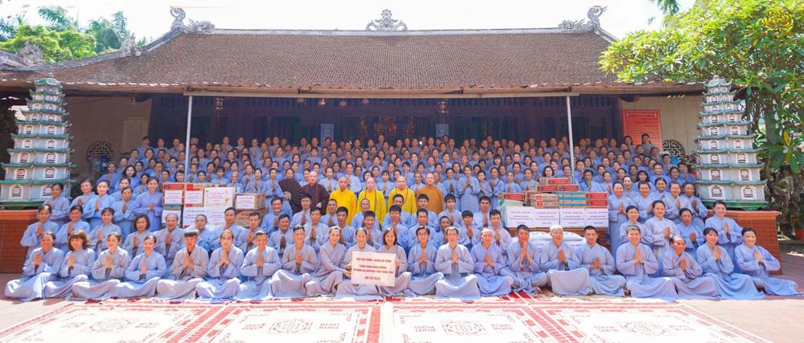
Tiếp nối hoạt động cúng dường trường hạ tại các chùa, tự viện tại nhiều tỉnh thành trên cả nước
Chi tiếtCúng dường trường hạ trong 3 tháng an cư – Phật tử thực hành hạnh hộ trì Tam Bảo
Hằng năm theo lời Phật dạy, chư Tăng lại vân tập về các chốn tùng lâm trụ xứ để cấm túc an cư kiết hạ
Chi tiết
Phóng sinh cứu vật – Nguyện muôn loài kết duyên với giáo Pháp
Đức Phật ra đời mang lại lợi ích cho chư Thiên và nhân loại, nêu cao ngọn cờ bình đẳng, thắp sáng tinh thần từ bi
Chi tiếtTại Liên hoan Ẩm thực Hạ Long – Quảng Ninh 2022 (từ ngày 13-15/5/2022), gian hàng của CLB Cúc Vàng đã mang đến một làn gió mới từ những trải nghiệm hết sức độc đáo cho du khách.
Chi tiếtẨm thực của người đệ tử Phật trong nét ẩm thực truyền thống dân tộc
Với ý nghĩa tôn vinh giá trị ẩm tнực, văn hóa đặc sắc, đồng thời góp phần xây dựng thương hiệu Quảng Ninh
Chi tiết[Video] Lễ dâng y cúng dường nhân mùa Phật đản | Ngày 14/4/Nhâm Dần (tức 14/5/2022)
Trong video “Lễ dâng y cúng dường nhân mùa Phật đản”, Cô Phạm Thị Yến đã đại diện cho các Phật tử trong CLB Cúc Vàng dâng lời tác bạch, thành tâm sắm sửa cà sa, y phục cúng dường chư Tôn đức.
Chi tiết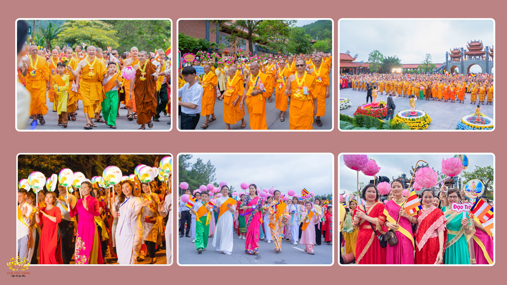
Rực rỡ sắc màu trang phục và những cảm xúc đặc biệt tại lễ diễu hành Phật đản 2022
Lễ diễu hành xe hoa Phật đản 2022 tại chùa Ba Vàng gây ấn tượng đặc biệt với không khí hân hoan rộn ràng của hơn 4 vạn người tham gia
Chi tiếtCung rước tượng Đức Phật sơ sinh với niềm tôn kính vô lượng
Trong ngày Tết Phật đản, hàng chục chiếc xe do các gia đình Phật tử phát tâm cúng dường
Chi tiếtBộ sưu tập những trang phục đặc sắc xuất hiện trong Đại lễ Phật đản chùa Ba Vàng 2022
Đại lễ Phật đản năm 2022, tại chùa Ba Vàng đã xuất hiện những sắc màu rực rỡ không chỉ của cờ và hoa, mà còn đến từ những bộ trang phục đặc sắc mà các Phật tử mặc khi về “Nhà lớn” đón Tết Phật đản.
Chi tiếtCô Phạm Thị Yến cùng các Phật tử trong CLB Cúc Vàng đã có mặt tại sân bay Nội Bài, Hà Nội để đón đoàn chư Tăng đến từ chùa Dhammakaya (Thái Lan) về tham quan và dự lễ Phật đản 2022
Chi tiết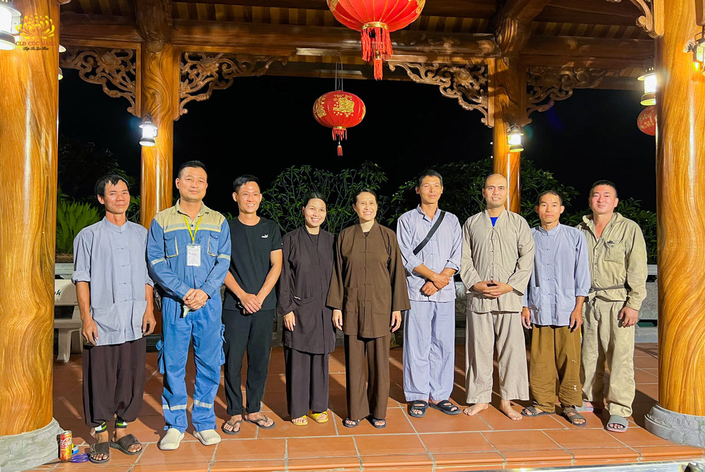
Những bước chân trong đêm: 3 câu chuyện đặc biệt về Cô Phạm Thị Yến trước thềm Phật đản 2022
Đêm ngày 05/4 – rạng sáng ngày 06/4/Nhâm Dần, Cô Chủ nhiệm Phạm Thị Yến có một cuộc họp hướng dẫn cách thực hành Pháp cho các thành viên Ban Thị giả trong Đại lễ Phật đản 2022.
Chi tiết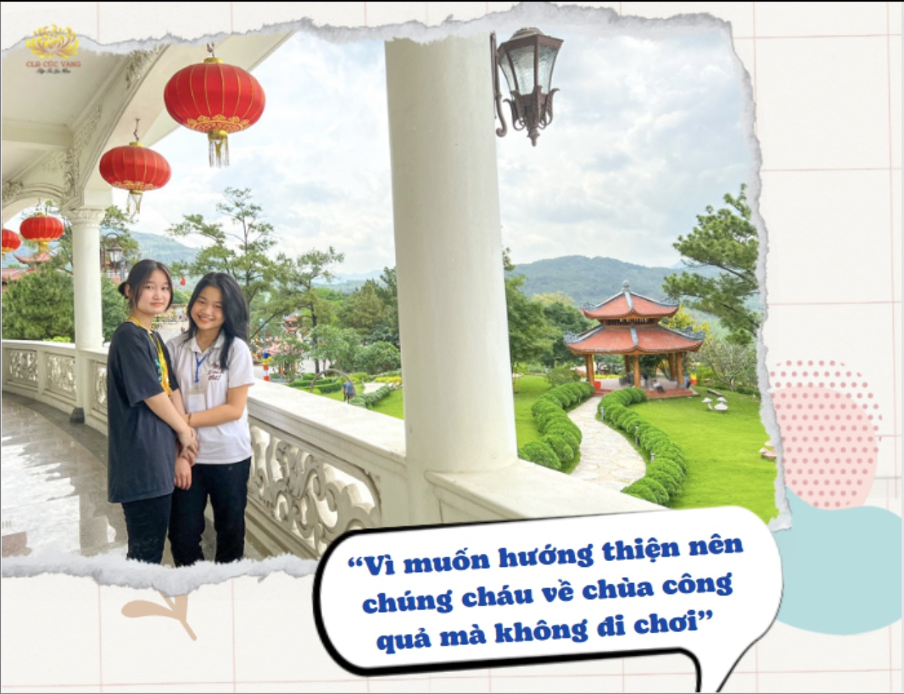
Lễ 30/4-1/5: Nhân dân, Phật tử về chùa Ba Vàng công quả mang theo những câu chuyện cảm xúc
Dịp 30/4-1/5 năm nay, ở chùa Ba Vàng, chúng tôi gặp được những người bạn rất dễ thương về chùa làm công quả
Chi tiết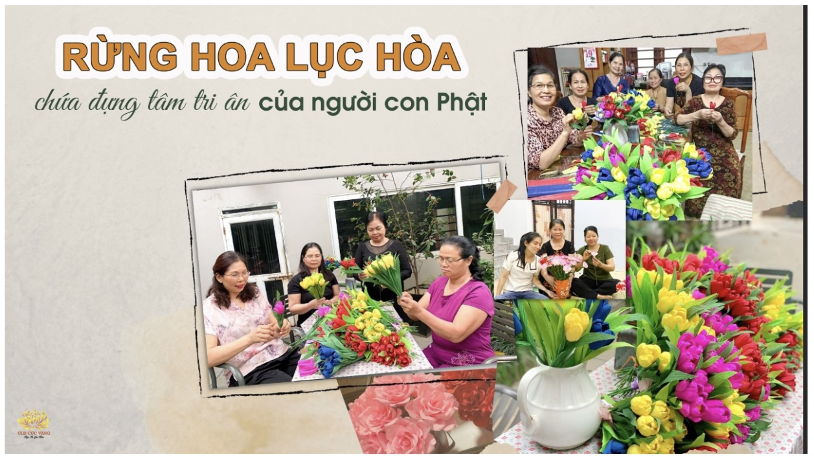
Hơn 1 vạn bông hoa “tỏa hương lục hòa”, chứa đựng tâm tri ân ngày Đức Phật đản sinh
Đại lễ Phật đản diễn ra vào ngày 7- 8/5/2022 tại chùa Ba Vàng sắp tới sẽ có sự xuất hiện của hơn 1 vạn bông hoa giấy xinh tươi, đa dạng các loài và rực rỡ sắc màu do các Phật tử trong CLB Cúc Vàng, CLB Tuổi Trẻ Ba Vàng
Chi tiết[Video] Hân hoan đón mừng ngày khánh đản của Đức Phật ở chùa Ba Vàng năm 2022
Như niềm vui của người dân thành Ca-tỳ-la-vệ cách đây hơn 2600 năm khi Thái tử Tất-đạt-đa thị hiện trên cõi đời
Chi tiết[Video] Khoảnh khắc đáng nhớ qua các mùa Phật đản tại chùa Ba Vàng
Tháng 4 âm lịch là thời khắc những người con Phật hướng tâm tới một sự kiện đặc biệt
Chi tiếtTán dương ân đức của Đức Thế Tôn – Nguyện mong giáo Pháp còn mãi nơi đời
Cô Phạm Thị Yến cùng các Phật tử trong CLB Cúc Vàng đã nhiễu quanh tôn tượng Đức Phật đản sinh và tụng kệ Đức Thế Tôn cứu đời để tán dương ân đức của Ngài.
Chi tiết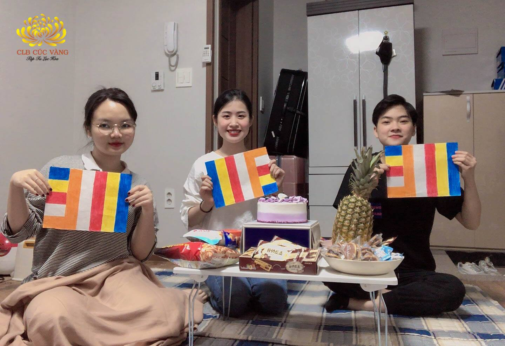
Đón lễ Phật Đản 2020 tại xứ sở kim chi xinh đẹp - Hàn Quốc
Lễ Phật đản năm nay đúng thật là tràn đầy ý nghĩa đối với bọn mình. Mặc dù đang ở tại Hàn Quốc nhưng...
Chi tiết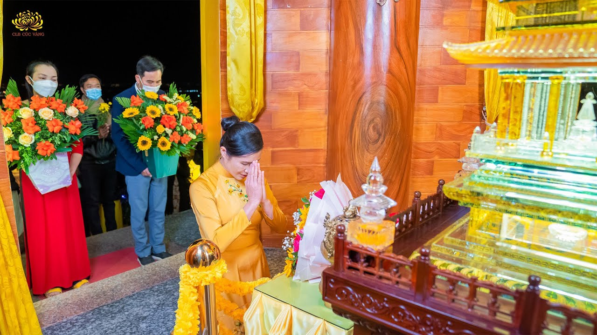
[Video] Dâng hoa cúng dường Xá Lợi Phật – Khoảnh khắc người con Phật lắng lòng tri ân
Trong buổi lễ dâng hoa cúng dường Xá lợi Phật, Cô Phạm Thị Yến đã đại diện dâng lời tác bạch và dâng hoa cúng dường lên kim thân Xá lợi, bày tỏ niềm tri ân vô hạn đến Đức Thế Tôn.
Chi tiếtCa mừng kỷ niệm ngày Thái tử Tất Đạt Đa xuất gia
CLB Cúc Vàng chùa Ba Vàng tổ chức chương trình văn nghệ: “Đức Phật với sự xuất gia của tướng сướр” nhân kỷ niệm ngày Thái tử Tất Đạt Đa xuất gia.
Chi tiết[Video] Phật sự công đức quý IV – Lan tỏa thiện tâm tới khắp thế gian
Video “Phật sự công đức quý IV – Lan tỏa thiện tâm tới khắp thế gian” tổng hợp các hoạt động phận sự của Phật tử CLB Cúc Vàng năm Tân Sửu.
Chi tiết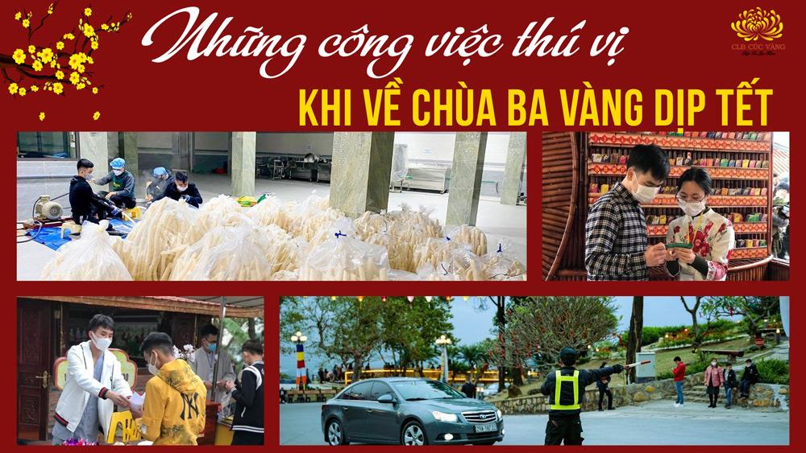
Khám phá những công việc thú vị mà bạn có thể làm khi về chùa Ba Vàng trong dịp Tết Nhâm Dần
Trong những ngày Tết, nhiều nhân dân, Phật tử đã đăng ký về chùa Ba Vàng làm công quả
Chi tiết[Video] Tụng Kinh trên núi đầu năm 2022 | Ngày 09/Giêng/Nhâm Dần
Phật tử Phạm Thị Yến - Chủ nhiệm CLB Cúc Vàng - Tập Tu Lục Hoà chia sẻ với các Phật tử trong CLB.
Chi tiết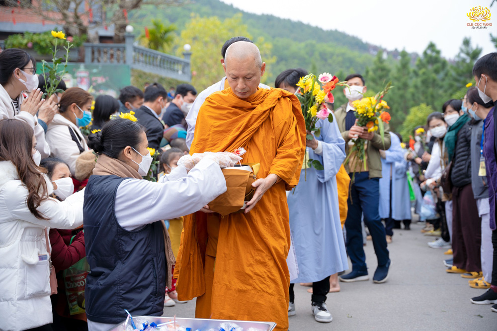
Phật tử đặt bát cúng dường chư tôn đức Phật giáo Nam tông Khmer và Tăng đoàn chùa Ba Vàng
Nhân dịp đầu xuân năm mới, Thượng tọa Sơn Ngọc Huynh – Uỷ viên Hội đồng Trị sự
Chi tiếtChương trình đặc sắc đón mừng Sinh nhật đạo tràng Phật tử xa xứ
Chúc mừng 1 năm thành lập đạo tràng Phật tử xa xứ” - chương trình đặc sắc được diễn ra tại chùa Ba Vàng
Chi tiếtNgày 11/11/Tân Sửu (15/12/2021) vừa qua, Phật tử CLB Cúc Vàng - Tập Tu Lục Hòa chùa Ba Vàng
Chi tiết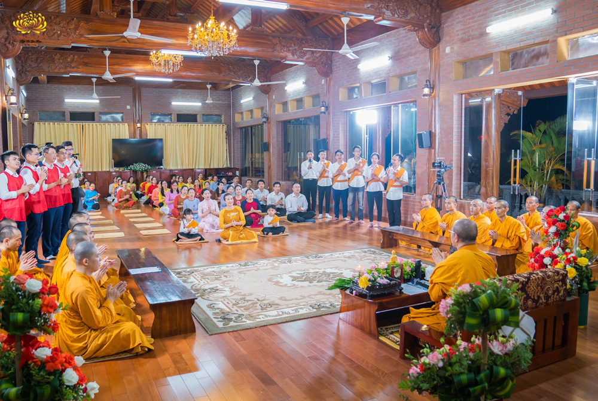
Thiêng liêng tình nghĩa thầy trò nhân Ngày Nhà giáo Việt Nam 20/11
Cô chủ nhiệm Phạm Thị Yến đã dâng lời tri ân trên Sư Phụ và phát nguyện sẽ tinh tấn tu tập, hộ trì Tam Bảo, chuyển tải Phật Pháp.
Chi tiếtNgày 23/10/2021 (tức 18/9/Tân Sửu), Trung tâm Y tế thành phố Uông Bí, tỉnh Quảng Ninh tổ chức tiêm phòng vaccine COVID-19 mũi 2 tại chùa Ba Vàng. Thành phần tiêm phòng là chư Tăng Ni, Phật tử chùa Ba Vàng; chư Tăng Ni ở các chùa lân cận và nhân dân địa phương.
Chi tiết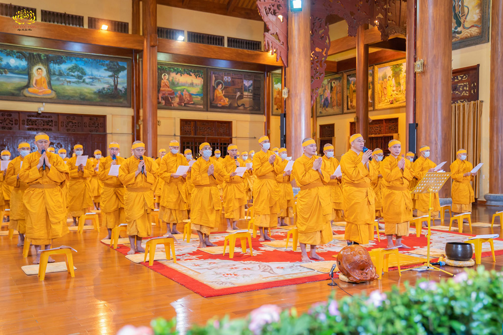
Tứ chúng thành kính tụng kinh tưởng niệm cố Đại lão Hòa thượng Thích Phổ Tuệ
Thuận dòng sinh diệt, thân tứ đại theo lẽ vô thường, Đức Đệ tam Pháp chủ GHPGVN Hòa thượng Thích Phổ Tuệ đã thâu thần viên tịch vào ngày 16/9/Tân Sửu.
Chi tiết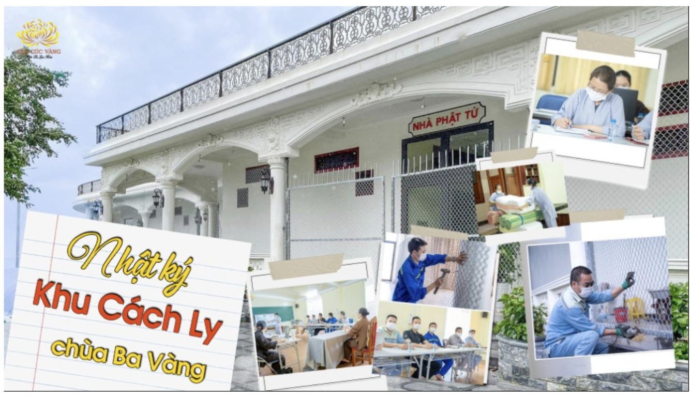
Văn phòng chùa Ba Vàng nhận được quyết định một khu vực độc lập của chùa Ba Vàng sẽ trở thành khu cách ly tập trung đón bà con ở miền Nam trở về.
Chi tiết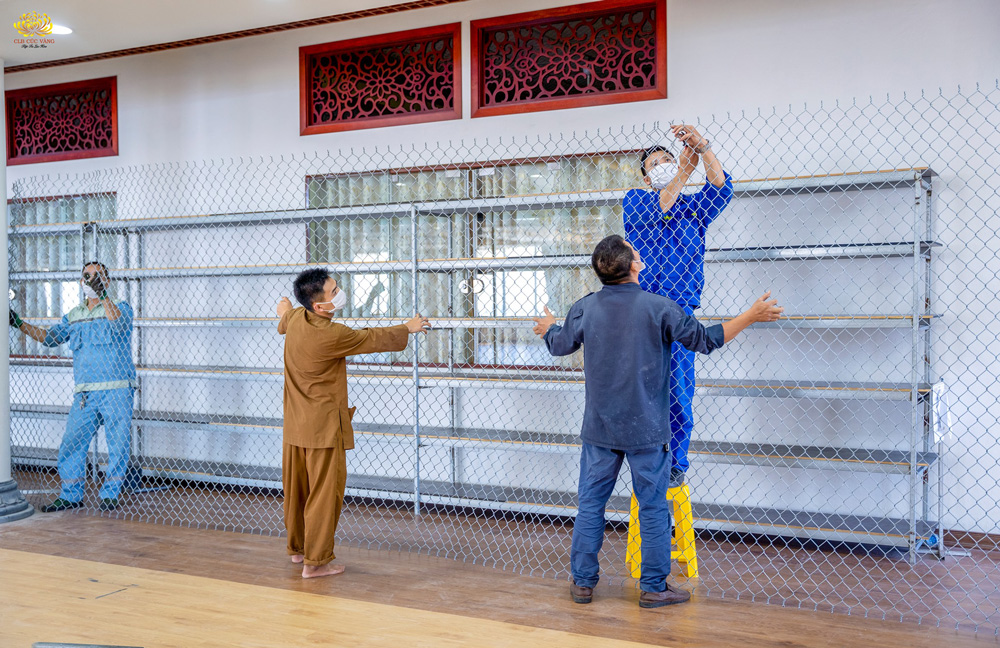
Công tác chuẩn bị khu vực cách ly độc lập tại chùa Ba Vàng
Trong thời gian tới, chùa Ba Vàng sẽ dành một khu vực độc lập làm cơ sở cách ly tập trung
Chi tiết